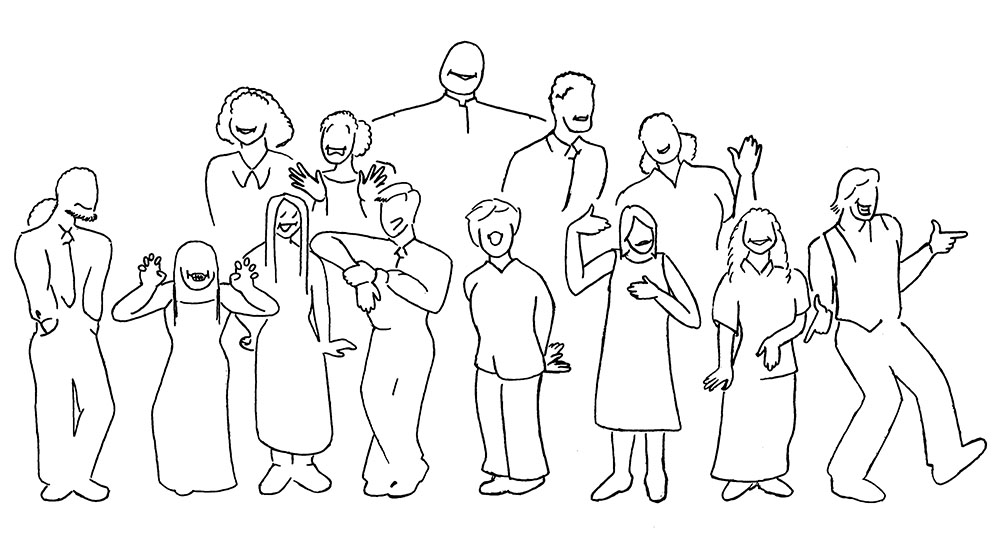

Twilight Tone (1997)
This image was the program and poster art for the Halloween 1997 Cal Jazz Choir concert The Twilight Tone, named after the Manhattan Transfer song, which was the lead number.
The members that inspired each caricature are (with recent name changes in parentheses, when I could find them) from left, front row: Ken Carlile, Helen Pogrel, Alyson Cabrera, Kevin Lam, Sarah Aldinger, Corbi Wright, Susan Garcia (Martin), myself, back row: Michelle Bloom (Goetzl), Jessica Reeder, Malcom Darrell, Prakash Bhave, and Sara Ferejohn (LaBatt). Anyone who knows these fine performers will recognize that I didn't do them justice. My most egregious errors were makeing Helen too short and Alyson too tall, and then placing them next to each other. But boy, this sure was fun to draw, and much more fun to perform with them.
I love to draw, but I have shied away from portraits. Every portrait that I have ever drawn, including these tiny little caricatures, captured something that I deeply loved about the person being drawn. Showing the portrait is a little like telling someone that you love them, and hearing that they don't like it is like being told that they don't love you back. But that's not an excuse for keeping them hidden. I'd like this and the three other caricatures & silhouettes that I drew of the Cal Jazz Choir to be a big "I love you" to all the members. You guys rock!
© W. Rhett Davis 1997